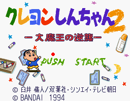

Crayon Shin-chan - SNES Games

- Company: Bandai
- Date Released: 1994
- Genre: Platform game
Controls
- A button: Use Item
- B button: Jump
- X button: [not used?]
- Y button: Run/Shoot
- L button: [not used]
- R button: [not used]
- Start: Pause
- Select: [not used]
As you explore the level, you must find items to crawl under to get to different portions of the
game. By jumping on top of enemies, you destroy them and reveal special items. Some items
are pellets that you can collect; some are costumes that give you special abilities.
Anime Video Game Resource Center © 1998 by Luis A. Cruz